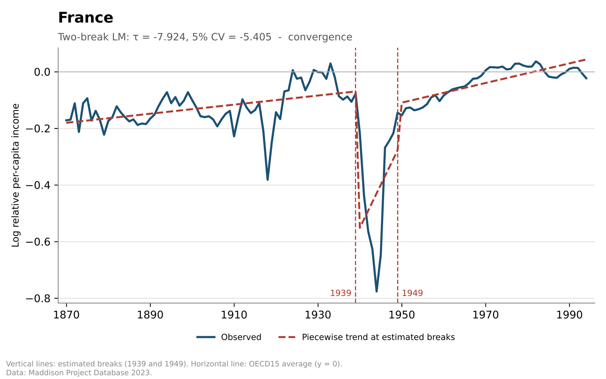
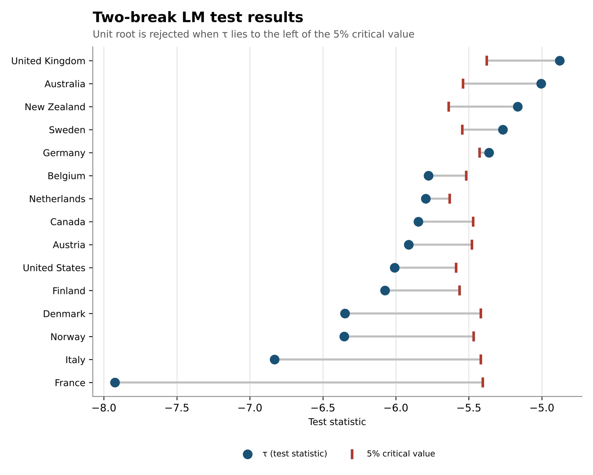
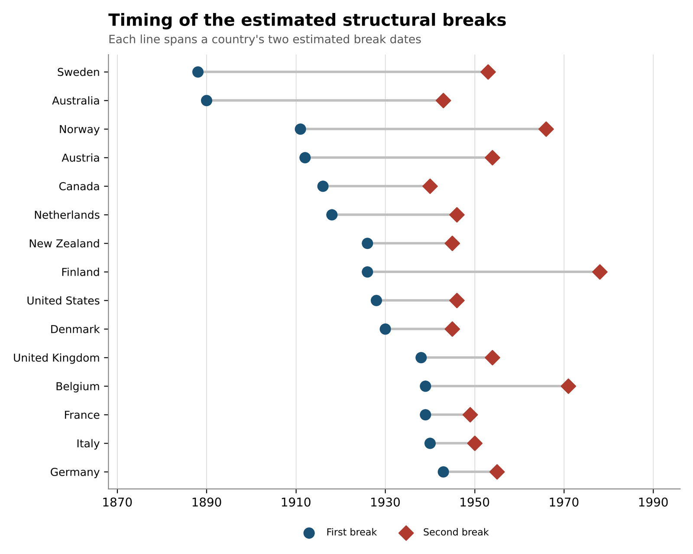

lsmlm
Lee-Strazicich minimum LM unit root test with structural breaks, for Python.
lsmlm tests the null hypothesis of a unit root against the alternative of a
(trend-)stationary series, allowing for zero, one or two structural breaks whose dates are
chosen from the data. It implements the minimum Lagrange multiplier (LM) test of Lee and
Strazicich (2003, 2013) and, with no breaks, the LM test of Schmidt and Phillips (1992).
Standard unit root tests lose power when a real break is ignored, and ADF-type tests with endogenous breaks can reject spuriously when the break occurs under the null. The minimum LM test avoids both: its null distribution does not depend on breaks under the null, so a rejection points to stationarity around the breaks, not to a unit root with breaks.
The package is a port of the Stata command lsmlm. It follows the Stata code step by
step, returns the same numbers, and prints the same results table
(see Validation against Stata).
Installation
pip install "git+https://github.com/gaussian2/lsmlm.git"The test itself needs only NumPy. Two optional extras add what the examples use:
# + pandas, for the bundled example dataset
pip install "lsmlm[data] @ git+https://github.com/gaussian2/lsmlm.git"
# + matplotlib and openpyxl, for the worked application
pip install "lsmlm[examples] @ git+https://github.com/gaussian2/lsmlm.git"Requires Python 3.10 or later.
Sample data
The package ships the dataset used throughout this page: log relative per-capita income for
15 OECD countries, 1870-1994. The series y is
log(GDP per capita / 15-country average), the variable studied by Strazicich, Lee and
Day (2004) to ask whether incomes are converging. A unit root in y means shocks to a
country's relative income are permanent (no convergence); stationarity means they die out.
from lsmlm.datasets import load_oecd15
panel = load_oecd15()
panel.head(4)cid countrycode country year gdppc rel_gdppc y 1 AUS Australia 1870 5217.0 1.469485 0.384912 1 AUS Australia 1871 5259.0 1.466378 0.382795 1 AUS Australia 1872 5663.0 1.528916 0.424559 1 AUS Australia 1873 6095.0 1.607877 0.474915
It is a balanced panel of 15 countries by 125 years, built from the Maddison Project Database 2023 (Bolt and van Zanden 2024).
Core workflow
There is one function. Pass it a series and its time variable:
from lsmlm import lsmlm
france = panel[panel["country"] == "France"]
result = lsmlm(france["y"], france["year"], breaks=2, maxlag=8, mindist=5)------------------------------------------------------------------
Lee-Strazicich minimum LM unit root test
------------------------------------------------------------------
Series: y
Model: trend break (level + trend shift)
Breaks: 2 (endogenously selected)
Max lag: 8 Lags chosen (GTOS): 3
Obs (regr.): 121
Sample: 1870 to 1994
Break 1: 1939 (lambda1 = 0.537)
Break 2: 1949 (lambda2 = 0.620)
------------------------------------------------------------------
Test statistic (t on S(t-1)): -7.9240
Critical values: 1% -6.096 5% -5.405 10% -5.149
Decision: Reject unit root at 1%
------------------------------------------------------------------
Break significance (|t| on dummies >= 1.645):
Break 1: significant
Break 2: significant
------------------------------------------------------------------
Reading the table:
- Test statistic is the smallest t-ratio on the lagged detrended series over all candidate break dates. Reject the unit root when it lies below the critical value.
- Break 1 / Break 2 are the dates that produced that minimum, in the units of the time variable. Here the search picks 1939 and 1949, the start of the war and the recovery. The published study, on an earlier vintage of the data, reports the same two dates.
- Lags chosen is the number of augmenting lags kept by the general-to-specific
rule, starting from
maxlag. - Break significance reports whether the break dummies matter at the 10% level. If a break is not significant, a model with fewer breaks may fit better.
Models and options
Number of breaks
lsmlm(y, year, breaks=2) # two breaks (the default)
lsmlm(y, year, breaks=1) # one break
lsmlm(y, year, breaks=0) # no break: the Schmidt-Phillips LM testTrend-break or crash
model="break" (the default) allows a shift in both level and trend at each break:
Lee-Strazicich Model C. model="crash" allows a shift in level only: Model A.
lsmlm(france["y"], france["year"], breaks=1, model="crash", maxlag=8)------------------------------------------------------------------
Lee-Strazicich minimum LM unit root test
------------------------------------------------------------------
Series: y
Model: crash (level shift)
Breaks: 1 (endogenously selected)
Max lag: 8 Lags chosen (GTOS): 3
Obs (regr.): 121
Sample: 1870 to 1994
Break 1: 1948 (lambda1 = 0.612)
------------------------------------------------------------------
Test statistic (t on S(t-1)): -4.5582
Critical values: 1% -4.001 5% -3.401 10% -3.091
Decision: Reject unit root at 1%
------------------------------------------------------------------
Break significance (|t| on dummies >= 1.645):
Break 1: not significant
------------------------------------------------------------------
Lags, trimming and break spacing
maxlagis the largest number of augmenting lags considered. Left out, it isfloor(4 * (T/100)^0.25), at least 1. With annual data, 8 is the choice in the original papers.trimis the fraction of the sample excluded at each end of the break search (default 0.10).mindistis the minimum number of observations between the two breaks (default 2).
Sub-samples
Subset the arrays before the call. This is the counterpart of Stata's if and
in.
post = france[france["year"] >= 1946]
lsmlm(post["y"], post["year"], breaks=1, maxlag=4)The time variable
t can be numeric or datetime-like. The data are sorted by it, rows with a missing
value in y or t are dropped, and repeated time values are an error. If
t is left out, y is taken to be in time order and breaks are reported as
positions 1..T.
Observations are numbered consecutively after missing values are dropped, as in the Stata command. A series with gaps in time is therefore treated as if it were contiguous.
Using the results
The function returns an LSMLMResult. Its attributes carry the names of the Stata
command's r() results.
r = lsmlm(france["y"], france["year"], breaks=2, maxlag=8, mindist=5,
print_results=False)
r.tau, r.k # (-7.923986349193853, 3)
r.tb1, r.tb2 # (1939, 1949)
r.cv5, r.reject5 # (-5.40456, True)
r.siglevel # '1%'
r.to_dict() # everything, as a plain dict
print(r) # the results tableThe full list is in the API reference.
Panels
The test applies to one series at a time. For a panel, loop over the units, switch the printing off and collect the results:
import pandas as pd
rows = []
for country, g in panel.groupby("country"):
r = lsmlm(g["y"], g["year"], breaks=2, maxlag=8, mindist=5, print_results=False)
rows.append({"country": country, **r.to_dict()})
table = pd.DataFrame(rows)
table[["country", "N", "k", "tb1", "tb2", "tau", "cv5", "siglevel"]]Passing several units in one call raises an error, because the time variable is then not unique.
Worked application
The repository includes a complete application,
examples/oecd15_analysis.py:
are per-capita incomes converging among OECD countries? It produces descriptive statistics, three
results tables, piecewise-trend fits, a figure per country, two summary figures and an Excel
workbook.
python examples/oecd15_analysis.py # 3 countries, maxlag 2
python examples/oecd15_analysis.py --full # 15 countries, maxlag 8Two-break test, 1870-1994
Trend-break model, maxlag=8, mindist=5, trim=0.10.
| Country | N | k | Break 1 | Break 2 | tau | 5% CV | Rejects at |
|---|---|---|---|---|---|---|---|
| Australia | 116 | 8 | 1890 | 1943 | -5.005 | -5.539 | - |
| Austria | 119 | 5 | 1912 | 1954 | -5.912 | -5.479 | 5% |
| Belgium | 123 | 1 | 1939 | 1971 | -5.777 | -5.517 | 5% |
| Canada | 121 | 3 | 1916 | 1940 | -5.845 | -5.470 | 5% |
| Denmark | 123 | 1 | 1930 | 1945 | -6.349 | -5.418 | 1% |
| Finland | 121 | 3 | 1926 | 1978 | -6.075 | -5.563 | 5% |
| France | 121 | 3 | 1939 | 1949 | -7.924 | -5.405 | 1% |
| Germany | 121 | 3 | 1943 | 1955 | -5.362 | -5.426 | 10% |
| Italy | 123 | 1 | 1940 | 1950 | -6.831 | -5.418 | 1% |
| Netherlands | 123 | 1 | 1918 | 1946 | -5.795 | -5.632 | 5% |
| New Zealand | 124 | 0 | 1926 | 1945 | -5.166 | -5.638 | - |
| Norway | 118 | 6 | 1911 | 1966 | -6.353 | -5.467 | 1% |
| Sweden | 117 | 7 | 1888 | 1953 | -5.268 | -5.544 | 10% |
| United Kingdom | 117 | 7 | 1938 | 1954 | -4.878 | -5.378 | - |
| United States | 116 | 8 | 1928 | 1946 | -6.008 | -5.587 | 5% |
Twelve of the fifteen series reject the unit root at the 10% level. The data are the 2023 Maddison vintage, so the numbers differ somewhat from the published study, which used the 1995 vintage.
Figures



Performance
The break search is a grid search: every candidate date, or pair of dates, gets its own regressions. Run time therefore grows with the sample length and, for two breaks, roughly with its square.
- A two-break test on 125 annual observations with
maxlag=8takes about one second. - The full 15-country application above (three tables, 17 figures) runs in under a minute.
- For long series, a larger
trimormindistshrinks the grid, and a smallermaxlagcuts the regressions per grid point.
API reference
lsmlm(y, t=None, breaks=2, model="break", maxlag=None, trim=0.10, mindist=None, varname="y", print_results=True)
| Argument | Stata option | Description | Default |
|---|---|---|---|
y | varname | The series to test: any one-dimensional array-like. Missing values are dropped. | required |
t | timevar() | Time variable, numeric or datetime-like, with unique values. | positions 1..T |
breaks | breaks() | Number of breaks: 0, 1 or 2. | 2 |
model | model() | "break" (level and trend shift) or "crash" (level shift). Ignored when breaks=0. | "break" |
maxlag | maxlag() | Largest number of augmenting lags considered. | floor(4*(T/100)^0.25), at least 1 |
trim | trim() | Fraction trimmed at each end of the break search; strictly between 0 and 0.5. | 0.10 |
mindist | mindist() | Minimum observations between the two breaks (two-break case). | 2 |
varname | Label for the series in the printed table. | "y" | |
print_results | noprint | Print the results table. | True |
Raises LSMLMError (a ValueError) for an invalid option, a sample of
fewer than 20 observations, an empty break window, or when no configuration can be estimated.
LSMLMResult
| Attribute | Description |
|---|---|
tau | The test statistic. |
k | Number of augmenting lags chosen. |
N | Observations in the final test regression. |
cv1, cv5, cv10 | Critical values at 1%, 5% and 10%. |
reject1, reject5, reject10 | Whether the unit root is rejected at each level. |
siglevel | "1%", "5%", "10%" or "Not significant". |
decision | The outcome in words. |
tb1, tb2 | Break dates, in the units of the time variable. |
tb1_index, tb2_index | Break positions in the sample, counted from 1. |
lambda1, lambda2 | Break fractions used to look up the critical values. |
break1_sig10, break2_sig10 | Whether each break's dummies are significant at 10%. |
tB1, tB2 | t-ratios on the one-period break dummies. |
tD1, tD2 | t-ratios on the step dummies (trend-break model only). |
breaks, model, maxlag, trim, mindist | The settings used, with defaults resolved. |
tmin, tmax | First and last time value of the sample. |
summary(), to_dict() | The results table as text; all attributes as a dictionary. |
Attributes that do not apply are None: for example tb2 with one break,
or tD1 in the crash model.
critical_values(breaks, model, nobs, lambda1=None, lambda2=None)
Returns the 1%, 5% and 10% critical values as a named tuple (cv1, cv5, cv10), the
same lookup lsmlm() uses.
lsmlm.datasets.load_oecd15()
Returns the example panel as a pandas DataFrame. Needs pandas.
Method
Write the deterministic part as Z(t). For a break at position b define
the impulse B = 1{t = b+1}, the step D = 1{t > b} and the trend shift
T = (t-b) 1{t > b}. The differenced terms DZ are:
| Model | Regressors in DZ | Removed from y to form S |
|---|---|---|
| No break | constant | level, trend |
| Crash | constant, B for each break | level, trend, level steps |
| Trend-break | constant, B and D for each break | level, trend, level steps, trend shifts |
For each candidate break date, or pair of dates, in the trimmed sample:
- Regress
D.yonDZand use the coefficients to build the detrended seriesS(t), withS(1) = 0. - Regress
D.yonDZ,S(t-1)andklags ofD.S. Choosekgeneral-to-specific: start atmaxlagand drop the last lag until its|t|is at least 1.645. - Record the t-ratio on
S(t-1).
The test statistic is the minimum of those t-ratios, and the break dates are where it occurs.
Critical values are tabulated by sample size and, for the trend-break model, by the break
fractions; the tables and their interpolation come from the leestra Stata package.
Validation against Stata
The reference is the Stata package's own run of its worked example (France, United Kingdom and
United States). Its log and result files are kept in the repository under
reference/stata/, and the test suite compares against them.
| Check | Agreement |
|---|---|
| Stored results of 12 runs: statistic, lags, break dates, break fractions, critical values, rejection flags, dummy t-ratios | largest difference 1.3e-13 |
| Printed results table, five runs covering no break, crash and trend-break models | identical, character for character |
| Piecewise-trend coefficients and R-squared of the worked example | within 1e-9 |
| Example dataset | bit-for-bit equal |
| Country | Breaks | Stata tau | Python tau |
|---|---|---|---|
| France | 1939, 1947 | -7.221908096419 | -7.221908096419 |
| United Kingdom | 1938, 1948 | -4.680104157967 | -4.680104157967 |
| United States | 1927, 1947 | -4.518985750277 | -4.518985750277 |
Two breaks, trend-break model, maxlag=2, mindist=5.
Scope. The comparison is against saved Stata output, not fresh Stata runs. The reference has no two-break crash case; that model is checked against an independent brute-force implementation instead. Samples of 250 observations or more are not covered by the reference.
Critical values and sample size. To match Stata, the package reproduces the Stata command's weighting between tabulated sample sizes, in which the weights on the two neighbouring rows are swapped relative to ordinary linear interpolation. With 123 observations, for example, the value is taken 85% from the T = 250 row and 15% from the T = 100 row. Details and an example are in VALIDATION.md.
Requirements
- Python 3.10 or later
- NumPy 1.22 or later
- Optional: pandas 1.4+ (example dataset), matplotlib 3.5+ and openpyxl 3.0+ (worked application)
To work on the package:
git clone https://github.com/gaussian2/lsmlm.git
cd lsmlm
pip install -e ".[dev]"
pytestReferences
Lee, J., and M. C. Strazicich. 2003. Minimum Lagrange multiplier unit root test with two structural breaks. Review of Economics and Statistics 85(4): 1082-1089.
Lee, J., and M. C. Strazicich. 2013. Minimum LM unit root test with one structural break. Economics Bulletin 33(4): 2483-2492.
Schmidt, P., and P. C. B. Phillips. 1992. LM tests for a unit root in the presence of deterministic trends. Oxford Bulletin of Economics and Statistics 54(3): 257-287.
Strazicich, M. C., J. Lee, and E. Day. 2004. Are incomes converging among OECD countries? Time series evidence with two structural breaks. Journal of Macroeconomics 26: 131-145.
Bolt, J., and J. L. van Zanden. 2024. Maddison style estimates of the evolution of the world economy: A new 2023 update. Journal of Economic Surveys 1-41.
Acknowledgments
- The Stata command
lsmlm, which this package ports, was written by Ibrahim Ongoren (Pamukkale University). - The critical-value tables and interpolation routines come from the
leestraStata package by H. Ozan Eruygur (SSC s459688). - The example dataset is derived from the Maddison Project Database 2023, licensed under CC BY 4.0.
Released under the MIT License. Notices for third-party material are in THIRD_PARTY_NOTICES.md.